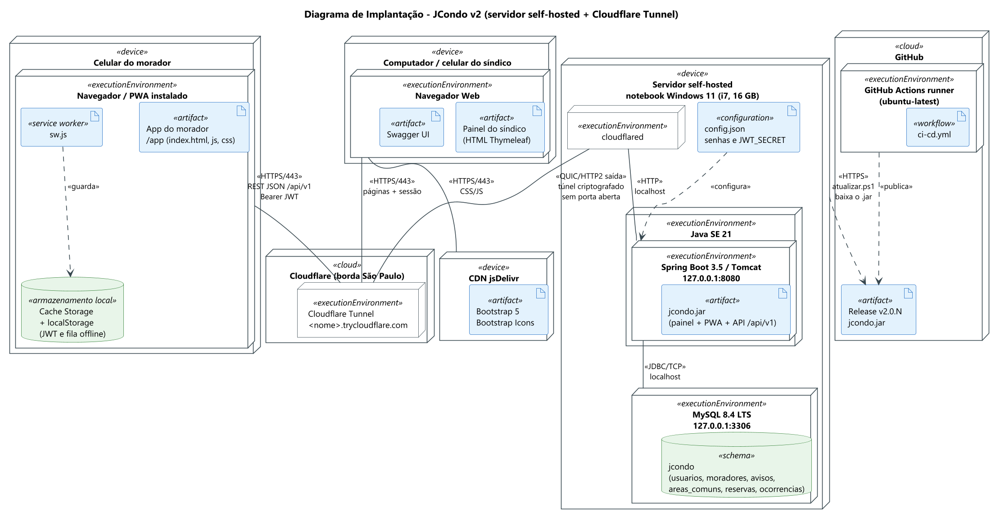

| # | Nome |
|---|---|
| 1 | Jorge Luiz do Nascimento |
O repositório segue o mesmo modelo da Entrega 1 e traz os códigos pedidos nesta etapa: a aplicação responsiva, a versão mobile (PWA) e a API, além dos scripts e da descrição da infraestrutura.
| Caminho | Conteúdo |
|---|---|
app/ | aplicação Spring Boot: painel do síndico, app do morador e API |
app/src/main/resources/static/app | versão mobile (PWA) |
infra/ | scripts para instalar, iniciar, atualizar e parar o servidor |
doc/ | este PDF, a apresentação, os diagramas e a descrição da infraestrutura |
.github/workflows/ci-cd.yml | pipeline que roda os testes e gera cada versão |
Nesta etapa o JCondo passou a ter login com dois perfis (síndico e morador), mural de avisos, reserva de áreas comuns e registro de ocorrências. O painel do síndico foi refeito para funcionar bem no celular, no tablet e no computador. Os moradores usam um app no formato PWA, que pode ser instalado no celular e continua abrindo sem internet. As duas partes conversam com o servidor pela API REST em /api/v1, protegida por token JWT e documentada no Swagger.
Na Entrega 1 a opção escolhida foi o Microsoft Azure. Na hora de configurar, a hospedagem passou para um servidor próprio (self-hosted), porque a nuvem dependia de conta institucional ativada, de regiões liberadas para estudante e de crédito com prazo. Para publicar o servidor na internet foi usado o Cloudflare Tunnel, que resolve os problemas do self-host citados na comparação da Entrega 1: não precisa de IP público nem de porta aberta no roteador, já entrega o endereço com HTTPS e certificado válido, e o banco e a aplicação ficam fora da rede. O custo é zero.
| Componente | Configuração | Uso |
|---|---|---|
| Servidor | notebook com Windows 11 | máquina que hospeda o sistema |
| Java 21 | roda o jcondo.jar ouvindo só em 127.0.0.1:8080 | painel, app e API |
| MySQL 8.4 LTS | ouvindo só em 127.0.0.1:3306, utf8mb4, fuso -03:00; usuário jcondo com acesso apenas ao banco jcondo | banco de dados |
| cloudflared | tunnel --url http://127.0.0.1:8080 | gera o endereço público https://<nome>.trycloudflare.com |
A aplicação lê a conexão e os segredos de variáveis de ambiente (DB_URL, DB_USERNAME, DB_PASSWORD, JWT_SECRET e TZ). As senhas são geradas na instalação e ficam num arquivo do servidor, fora do repositório.

O usuário acessa o endereço HTTPS. A Cloudflare repassa a requisição pelo túnel, que é aberto pelo próprio servidor de dentro para fora, até o cloudflared. Ele entrega a requisição para a aplicação, que usa o MySQL local.
O GitHub Actions roda os testes a cada push e, na branch main, gera uma Release com o jcondo.jar. Como o servidor não aceita conexões de fora, é ele que busca a versão nova com o script atualizar.cmd.
| Script | Função |
|---|---|
infra\instalar.cmd | baixa o MySQL e o cloudflared, cria o banco, o usuário e as senhas |
infra\iniciar.cmd | sobe o MySQL, a aplicação e o túnel e mostra o endereço público |
infra\atualizar.cmd | baixa a última Release e reinicia a aplicação |
infra\parar.cmd | desliga tudo |
infra\instalar.cmd.infra\iniciar.cmd e usar o endereço que aparece no final.A limitação é que o sistema fica no ar só enquanto o servidor estiver ligado, e o endereço muda cada vez que o túnel é aberto.